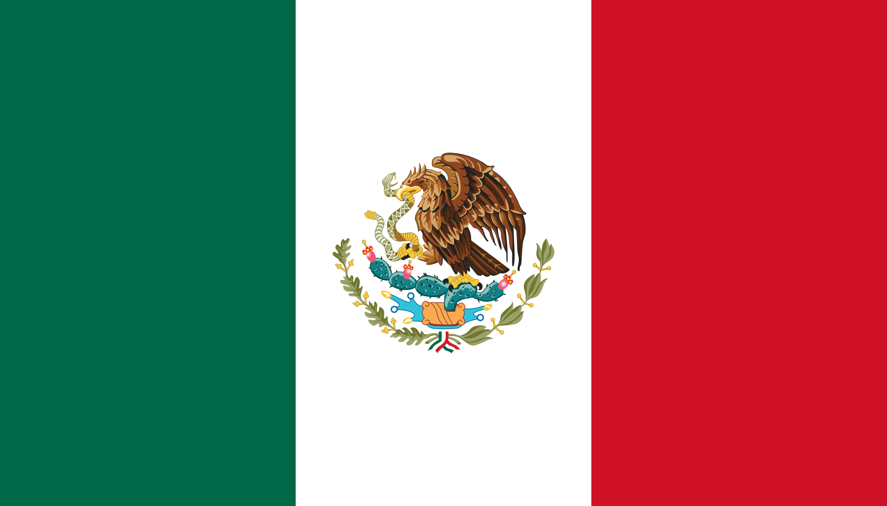

Хью́стон (англ. Houston, перевод: Звук слушать) — четвёртый по количеству жителей город в Соединённых Штатах Америки и крупнейший город в штате Техас с населением 2 304 580 человек по данным переписи населения 2020 года[2]. Хьюстон является административным
центром округа Харрис, а также главным экономическим центром агломерации Большого Хьюстона, занимающего пятое место среди агломераций по населению с общей численностью 7 122 240 человек по результатам переписи 2020 года[3][4]. Город располагается
в 50 километрах от Мексиканского залива на прибрежной равнине.
Хьюстон был основан 30 августа 1836 года и включён в состав республики Техас 5 июня 1837 года, получив своё имя в честь Сэмюэла Хьюстона — главнокомандующего армией Техаса во время Техасской революции и президента Республики Техас. Быстрое развитие
порта и железных дорог в XIX веке, а также начало добычи нефти и последовавшее развитие нефтяной промышленности в XX веке привели к быстрому росту населения. В 1960-е годы количество жителей превысило один миллион человек, а в 2000-е — два миллиона.
Город является ведущим мировым центром энергетической промышленности, а экономика города также представлена предприятиями в области аэронавтики, транспорта и здравоохранения. Важнейшими объектами для экономики и инфраструктуры города являются космический
центр имени Линдона Джонсона, крупнейший американский по международным грузоперевозкам порт, хьюстонский судоходный канал, крупнейший в мире Техасский медицинский центр.
Город назван в честь Сэмюэла Хьюстона — главнокомандующего армией Техаса во время Техасской революции (1835—1836) и президента Республики Техас (1836—1838, 1841—1844)[5].
После окончания войны за независимость Техаса, в августе 1836 года предприниматели братья Август и Джон Аллены купили 26,9 км² земли вдоль реки Буффало-Байю[en], планируя основать на ней населённый пункт[6]. Они хотели, чтобы будущий город стал
столицей Техаса и крупным торговым центром[6][7].
Датой основания города принято считать 30 августа 1836 года[5][7], когда братья Аллены разместили объявление о появлении города[7]. Город назвали в честь генерала Сэма Хьюстона, возглавлявшего армию техасцев в битве при Сан-Хасинто во время войны
против Мексики, позже избранного президентом Техаса[5][6][7]. На январь 1837 года в посёлке проживало всего 12 человек, однако через четыре месяца население возросло до 1500 человек[7]. 5 июня 1837 года город был включён в округ Гаррисберг
(ныне Харрис) и стал временной столицей Республики Техас, которой оставался до 1839 года[7][8]. Первым мэром Хьюстона стал Джеймс Холман[7][8].
XIX век
Allen’s Landing — место, где был основан город
В 1840 году жители Хьюстона создали торговую палату, деятельность которой была направлена на развитие бизнеса по морским перевозкам и недавно построенного порта на Буффало-Байю[9], в течение первых четырёх лет палата стремительно развивалась[10].
Значимость торговой палаты в экономике росла, в 1853 году Законодательное собрание Техаса выделило денежные средства на улучшение каналов Буффало-Байю[11]. В 1846 году город вошёл в состав США вместе с Республикой Техас.
К 1860 году были проложены железные дороги, связавшие Хьюстон, Галвестон и Бомонт[12]. В этом же году Хьюстон стал железнодорожным узлом для экспорта хлопка[8]. Во время гражданской войны город служил штабом генерала Джона Магрудера, использовавшего
его в качестве организационного пункта для сражения у Галвестона[en][13]. В 1860-х годах продолжал развиваться важный для экономики города объект — канал на Буффало-Байю[14]. С середины XIX века началась активная торговля между Хьюстоном и
близлежащими городами; к 1890 году город стал железнодорожным центром Техаса[15].
XX век
В 1900 году на Хьюстон обрушился Галвестонский ураган, продолжавшийся с 27 августа по 12 сентября[16]. В пересчете на сегодняшний курс ущерб составил бы $526 млн, погибло 8 тысяч человек[17]. В следующем году было найдено большое месторождение[en]
нефти вблизи города Бомонт, что послужило началом развития нефтяной промышленности в Техасе[18][19]. В 1902 году президент США Теодор Рузвельт утвердил проект стоимостью в $1 млн на реконструкцию хьюстонского судоходного канала[19]. К 1910
году численность населения города достигла 78 800 человек, почти в два раза превысив количество жителей проживавших в Хьюстоне в 1900 году[20]. В 1914 году президент США Вудро Вильсон принял участие в открытии нового глубоководного порта Хьюстона,
а через год был открыт хьюстонский судоходный канал[21].
К 1930 году Хьюстон стал самым большим городом Техаса, обогнав по численности населения такие города как Даллас, Форт-Уэрт и Остин[22][23]. Вторая мировая война стала мощным стимулом для экономического развития города. Из-за резко возросших потребностей
США в нефтепродуктах и синтетическом каучуке вдоль судоходного городского канала было возведено несколько нефтехимических заводов и производственных предприятий[24]. В те годы Хьюстон стал крупным центром по производству нефтехимических изделий,
однако в тот же период уровень тоннажа судов, находящихся в порту, снизился[24]. Аэропорт Эллингтон-Филд, построенный ещё во время Первой мировой войны и реконструированный в 1940—1941 годах, служил учебным центром по подготовке лётного состава
ВВС[25].
В 1945 году было начато формирование Техасского медицинского центра[26]. В конце 1940-х несколько пригородов были включены в городскую черту, в результате чего площадь Хьюстона увеличилась более чем в два раза[7][27]. В 1950-е годы управления
многих крупных (в основном нефтяных) компаний США переместились в Хьюстон, что благоприятно отразилось на экономике города, одним из поводов для переезда послужило массовое оснащение всех офисов кондиционерами[28][29].
Физико-географическая характеристика
Географическое положение
Хьюстон расположен в 50 километрах от Мексиканского залива на прибрежной равнине. Значительная часть города была построена на лесных угодьях, болотах и прериях, они до сих пор сохранились в близлежащих районах около Хьюстона. Город расположен
на территории, для которой обычны частые ливни и дожди, поэтому для Хьюстона наводнения — постоянная проблема[41]. Высота города над уровнем моря в среднем 15 метров[42], самая высшая точка — северо-запад Хьюстона (38 метров)[42]. Площадь
города составляет 1 739,62 км², из которых 1 658,72 км² занято сушей, а 80,9 км² — водная поверхность[43].
Климат
Город находится в зоне субтропического муссонного климата по классификации Кёппена (Cfa). Преобладающие юго-восточные ветры с Мексиканского залива дуют на протяжении всего года[44]. Большая влажность в городе обусловлена близким присутствием Мексиканского
залива. Влажность воздуха достигает утром 90 % и к полудню снижается до 70 %[45]. В среднем 90 дней в году — солнечные, большая часть которых в октябре и ноябре[44]. 160 дней в году — облачные, большая часть — с декабря по май[44].
Весной и летом в городе жарко и влажно: средняя температура весной 21 °C, а летом — 28,8 °C. Из-за высокой температуры почти во всех транспортных средствах и зданиях установлены кондиционеры. Абсолютный максимум температуры был зарегистрирован
в 2000 и 2011 годах, когда она составила 42,8 °C. На Хьюстон часто обрушиваются ураганы, самые крупные из которых за последние десятилетия — «Эллисон» и «Айк». Осень — достаточно тёплое время года, особенно сентябрь. Температура в этом месяце
выше, чем в мае. Средняя температура осенью составляет 21,8 °C, а среднее количество осадков — самое высокое в году (359,7 мм). Зима тёплая. Самая низкая температура была зарегистрирована в 1930 году — −15 °C. Средняя температура зимой составляет
12,6 °C, а максимальная была зарегистрирована в 1986 году — 32,8 °C. 18 дней в году температура опускается ниже 0 °C[44]. Обычно зимой осадки выпадают в виде дождя, но редко могут быть и в виде снега. Начиная с 1895 года, снег падал 35 раз,
причём 21 раз устанавливался временный снежный покров[46].
Дни с ясной и дождливой погодой в месяц (суммарно по часам)
Месяц
Янв
Фев
Мар
Апр
Май
Июн
Июл
Авг
Сен
Окт
Ноя
Дек
Год
Солнечное сияние, день
10
10
9
8
8
8
10
9
7
7
8
9
103
Дождь, день
14
12
12
10
10
14
13
12
10
9
10
12
138
Рельеф, внутренние воды
Для почв Хьюстона характерно наличие осадочных горных пород и песка[51]. На поверхности часты эрозии, на территории города находится около 300 разломов, их общая длина примерно 500 км[52][53][54]. Один из них — Long Point–Eureka Heights fault
system[en]. Также есть уникальные отложения из смеси песков и глин, благодаря им, через определённое время, из разлагающихся органических веществ образуются нефть и природный газ. На окраинах Хьюстона встречается чёрная плодородная почва,
на которой растят рис, сою, зерновые культуры, овощи и разводят крупный рогатый скот, лошадей, свиней и домашнюю птицу[55]. В городе и его окрестностях имеется очень малая вероятность сильного землетрясения[56], а самое сильное землетрясение
магнитудой 3,8 было в 1910 году[57].
В Хьюстоне протекают четыре реки. Основная, Буффало-Байю[en], проходит через центр города и хьюстонский судоходный канал, и имеет три притока. Брес-Байю протекает вдоль района Техасского медицинского центра, Симс-Байю проходит через южную часть
города, Уайт-Ок-Байю[en] — через северную часть города. Судоходный канал следует дальше до Галвестона, вплоть до Мексиканского залива. В пригороде находятся два озера: Конро и Хьюстон, которые являются водохранилищем и служат городскими источниками
воды[58]. На территории города протекает множество подземных вод, которые раньше активно использовали для водоснабжения, но перестали из-за медленного движения земной поверхности[7][59].
Административное устройство
Органы власти, административное деление
Здание мэрии Хьюстона
Главой Хьюстона является мэр[69]. Мэр является главным должностным лицом, он отвечает за общее руководство городом, подписывает все постановления и законы, принятые городским Советом[en] и следит за тем, чтобы они выполнялись[70]. Помимо этого,
мэр представляет Совету годовой бюджет города для одобрения, а затем предоставляет Совету информацию о его исполнении[70]. Глава города избирается гражданами города путём голосованию максимум на два срока, по 4 года каждый[71]. Со 2 января
2016 года пост мэра занимает Сильвестр Тёрнер — член Демократической партии[72]. Городской Совет Хьюстона состоит из одиннадцати человек, выбранных от одиннадцати избирательных округов, и пяти человек, выбранных от всего города в целом[73].
Члены Совета избираются на такой же срок, как и мэр[73]. В полномочия Совета входят назначение избранного мэра, изменение и подтверждение бюджета города, управление городской недвижимостью, ассигнование и выпуск облигаций, заключение контрактов
и одобрение городских расходов на сумму более $50 тысяч[73]. Городской контролёр, в обязанности которого входит распределять средства и финансировать городской бюджет, избирается независимо от мэра и совета[74]. Со 2 января 2016 года эту должность
занимает Крис Браун[75]. Хьюстон — самый крупный город США без административного деления[76]. Город является административным центром округа Харрис, а также главным экономическим центром Большого Хьюстона.
Внешние связи
В мэрии Хьюстона есть отдел по международной торговле и развитию, занимающийся взаимодействием администрации города с международным бизнес-сообществом[77]. В 2018 году Хьюстон посетило 165 иностранных делегаций из 40 стран[78]. В Хьюстоне расположены
консульства 82 стран[79]. По количеству консульств город занимает в США третье место после Нью-Йорка и Лос-Анджелеса[80]. Более 430 хьюстонских компаний имеют офисы за рубежом, а также в городе располагаются офисы 800 зарубежных компаний[80].
с 9 по 11 июля 1990 года в городе состоялся 16-й саммит G7[en]. Ежегодно в Хьюстоне проводятся международные конференции, такие как Offshore Technology Conference[en] и CERAWeek[en], где обсуждаются вопросы энергетики[81][82].
На данный момент у Хьюстона 17 городов-побратимов[83].
Флаг города был принят в 1915 году[84]. На нём изображена пятиконечная звезда на синем фоне. Внутри звезды — паровоз типа 2-2-0 (по американской классификации) — 4-4-0 «American»[85]. Это связано с тем, что в конце XIX — начале XX вв. паровозы
данного типа были широко распространены на американском континенте, в частности именно они водили поезда в город. Новый флаг представлял собой немного изменённый предыдущий вариант флага города, принятый ещё в 1840 году[85]. Причиной была
смена локомотивов: паровоз типа 2-1-0, распространённый в 1830—1850 гг.[86], был заменён на паровоз типа 2-2-0, изображённый на флаге по настоящее время.
Печать Хьюстона была утверждена городским советом Хьюстона 24 февраля 1840 года[87]. Печать была разработана бывшим мэром Хьюстона Фрэнсисом Муром-младшим[en]. Одинокая звезда — один из символов Техаса и её присутствие на печати обозначает принадлежность
города к Республике Техас. Локомотив отождествляет прогресс, олицетворением которого железнодорожное движение и было во время принятия печати. Хьюстон служил железнодорожным центром на протяжении многих лет[88]. Плуг символизирует сельское
хозяйство Техаса[87].
Экономика
Общее состояние
Хьюстон является одним из ведущих городов мира в сферах добычи и переработки нефти и природного газа, из-за чего часто именуется «энергетической столицей мира»[90][91][92], а также биомедицинских исследований и аэронавтики. Также Хьюстон имеет
репутацию «зелёного города», так как половина электроэнергии производится с помощью солнечных и ветряных установок[93]. Большую роль в транспортной сфере города играет порт. В Хьюстоне базируется 21 компания из списка Fortune 500, которая
входит в 500 крупнейших компаний[89].
Валовой внутренний продукт агломерации Большого Хьюстона в 2020 году составил $488,16 млрд и является седьмым по величине среди показателей других агломераций. Крупнейшими пятью отраслями в формировании в структуре ВВП являются: операции со страхованием,
недвижимостью, арендой, лизингом и финансами — 18,4 %, оказание профессиональных и бизнес-услуг — 14,5 %, промышленное производство — 14,4 %, государственный сектор — 8,8 % и образовательные, медицинские и социальные услуги — 6,2 %[94].
По итогам 2020 года экспорт Большого Хьюстона составил $129,5 млрд, а импорт — $67,4 млрд. Основными статьями экспорта являлись: нефтепродукты — $73 млрд (56,4 %), химикаты — $12,5 млрд (9,6 %), пластик и продукты из пластика — $9,2 млрд (7,1
%), промышленное и компьютерное оборудование — $8,3 млрд (6,4 %), транспортные средства и запасные части к ним — $3,6 млрд (2,8 %). Значимыми статьями импорта стали: нефтепродукты — $13,9 млрд (20,6 %), промышленное и компьютерное оборудование
— $10.2 млрд (15,1 %), электрооборудование — $5,3 млрд (7,9 %), изделия из железа и стали — $4,1 млрд (6,1 %)[95][96].
Крупнейшие экспортёры Хьюстона
Страна
млрд $
%
Китай
10,146
7,83%
 Мексика
9,297
7,18%
Бразилия
9,11
7,03%
Нидерланды
8,383
6,47%
Южная Корея
6,522
5,04%
Хьюстонский судоходный канал
Международная исследовательская компания Mercer в 2019 году отвела Хьюстону 66 место в рейтинге самых удобных для проживания городов мира — наравне с американскими Лос-Анджелесом и Майами[97], а по стоимости жизни в рейтинге 2021 года город занял
75 место — между немецким Дюссельдорфом и австралийской Канберрой[98]. В категории «лучшие места для бизнеса и карьеры» по версии журнала Forbes за 2019 год Хьюстон занимает 34 место в США[99]. Исследовательская компания A.T. Kearney[en] поставила
Хьюстон на 41 место в списке глобальных городов мира[100].
К 1980-м годам в городе была развита преимущественно нефтяная промышленность, составлявшая 87 % всей экономики города, что привело к серьёзной зависимости от цен на нефть[33][34]. В середине 1980-х годов в экономике города была рецессия вследствие
нефтяного кризиса того десятилетия[32][33][34], что привело к потере 220 тысяч рабочих мест[34]. C конца 1980-х годов Хьюстон диверсифицирует свою экономику, сосредоточив внимание на развитии аэрокосмической промышленности, здравоохранения,
информационных технологий[33][34], а ярким примером могут служить такие крупные организации, как Техасский медицинский центр и городской порт[101]. Доля нефтяной индустрии в экономике снизилась вдвое — с 87 % до 44 % к 2016 году[33][34][102].
По состоянию на середину 2022 года экономика Хьюстона активно восстанавливается после пандемии COVID-19 и находится в процессе выхода на уровень допандемийного периода[103], а главным вызовом стала высокая инфляция[en] вследствие прерывания
глобальных цепочек поставок из-за прошедшей пандемии и продолжающихся с февраля 2022 года военных действий в Украине[104]. Минимальная заработная плата в Хьюстоне в час составляет $7,25 или $1 257 в месяц[105]. Безработица на декабрь 2018
года составила 3,9 %[106]. За чертой бедности в 2020 году находилось 192 657 человек или 8,4 % жителей[107]. Средние доходы семьи на 2018 год по данным Forbes составляют $62 900, а средняя цена дома составляет $238 000[108].
Энергетика и нефтехимия
В Хьюстоне находится более 5 тысяч энергетических компаний, связанных с ведением бизнеса в этом регионе[109]. По состоянию на 2021 год в городе находятся штаб-квартиры 13 энергетических и нефтяных компаний, входящих в рейтинг 500 крупнейших компаний
США (Fortune 500): Phillips 66, Enterprise Products Partners[en], Plains All American Pipeline, Baker Hughes, ConocoPhillips, Occidental Petroleum, Halliburton, Kinder Morgan, EOG Resources, Cheniere Energy, CenterPoint Energy[en], Targa Resources[en],
National Oilwell Varco. Хьюстон является членом Всемирного партнёрства энергетических городов[110]. Одной из самых крупных компаний, входящих в рейтинг Fortune 500 и обеспечивающих электроэнергией город, является компания CenterPoint Energy[en],
которая обслуживает свыше 7 миллионов потребителей в восьми штатах: Арканзас, Индиана, Луизиана, Миннесота, Миссисипи, Огайо, Оклахома и Техас[111]. Другая крупная энергетическая компания Calpine[en] обладает парком из 76 электростанций разных
типов c суммарной мощностью в 26 тысяч мегаватт, расположенных в 22 штатах США, а также в Канаде и Мексике по всей территории США[112]. Компания насчитывает 2300 сотрудников, на Техас приходится 35 % генерации электроэнергии, а 65 % — на остальные
места деятельности компании[113]. Одна из электростанций Calpine, именуемая Channel Energy Center, расположена в Хьюстоне и её максимальная мощность составляет 827 мегаватт (базовая — 743 мегаватт), всего в Техасе расположено 12 электростанций
компании[114].
Офис компании Chevron в Хьюстоне
Хьюстон является одним из крупнейших производственных центров мира для нефтехимической промышленности. В городе располагаются больше 3 700 организаций, работающих в сфере нефтехимии[115]. Также в хьюстонском регионе находятся 9 нефтеперерабатывающих
заводов, перерабатывающих 2,3 миллиона баррелей в день, что составляет 13,2 % от всей переработки в США[115]. В городе находится 17,5 % рабочих мест, занятых в сфере нефтехимии, из всех мест в США (112,6 тысячи из 643,3 тысяч)[115]. По итогам
2020 года на Большой Хьюстон, в котором насчитывалось 618 предприятий химической отрасли, приходилось 44 % базовых нефтехимических мощностей страны, в частности, в агломерации было произведено 44 % полиэтиленовых, 40,1 % полипропиленовых и
31,6 % поливинилхлоридных смол от всего производства в США соответственно[116].
Авиакосмическая промышленность
Космический центр им. Джонсона
В Хьюстоне располагается космический центр имени Линдона Джонсона, представляющий собой научно-исследовательское и проектно-конструкторское предприятие[117], в котором работают 15 000 человек (3000 инженеров и учёных, 12 000 остальных рабочих)[118].
Всего в городе располагаются больше 150 организаций, имеющих дело с космической отраслью[117].
В районе Хьюстона находятся производственные мощности компании Lockheed Martin[119], а также офис программы строительства космического корабля «Орион» для NASA[120]. В городе расположены производственные мощности компании Boeing[119], а также
штаб-квартира подразделения «Boeing Space Exploration», занимающаяся исследованием космических систем[121]. Мощности компании Beechcraft, находящиеся в аэропорте им. Хобби, занимаются техническим обслуживаем и ремонтом воздушных судов[119][122].
Компания Barrios Technology выполняет контракты для NASA, связанные с кораблём «Орион», а также разрабатывает программное обеспечение для воздушных судов Boeing[119]. Другими крупными исполнителями заказов NASA в Хьюстоне являются: Computer
Sciences Corporation[en] — техническое обслуживание и модификация самолётов, Jacobs Engineering Group[en] — машиноведение, L-3 Communications — роботехника, MEI Technologies — электрические инженерные системы, Oceaneering International[en]
— скафандры и прилагающееся аппаратное обеспечение, Raytheon — лаборатория нейтральной плавучести и макеты космических кораблей, SAIC — безопасность и поддержка миссий, United Space Alliance — координационный центр информации, United Technologies
— внекорабельная деятельность, Wyle Laboratories[en] — космическая биология[119].


 Абу-Даби (араб. أَبو ظَبِي), Объединённые Арабские Эмираты
Абу-Даби (араб. أَبو ظَبِي), Объединённые Арабские Эмираты Тиба (яп. 千葉市), Япония
Тиба (яп. 千葉市), Япония Гуаякиль (исп. Guayaquil), Эквадор
Гуаякиль (исп. Guayaquil), Эквадор Уэльва (исп. Huelva), Испания
Уэльва (исп. Huelva), Испания Лейпциг (нем. Leipzig), Германия
Лейпциг (нем. Leipzig), Германия.svg.webp) Ницца (фр. Nice), Франция
Ницца (фр. Nice), Франция Шэньчжэнь (кит. трад. 深圳), Китай
Шэньчжэнь (кит. трад. 深圳), Китай Ставангер (норв. Stavanger), Норвегия
Ставангер (норв. Stavanger), Норвегия Тюмень, Россия
Тюмень, Россия Бразилия
Бразилия Нидерланды
Нидерланды